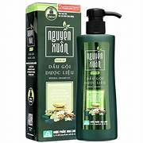
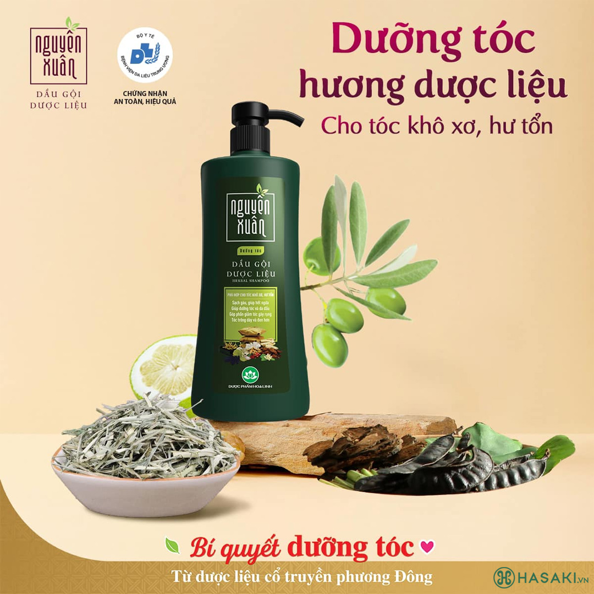

285.000 ₫ (Đã bao gồm VAT)
Giá thị trường: 346.000 ₫ - Tiết kiệm: 61.000 ₫ (18%)
Dung Tích: Combo 900ml
Bạn muốn nhận hàng trước 16h hôm nay (Miễn phí). Đặt hàng trong 30 phút tới và chọn giao hàng 2H ở bước thanh toán.
Dầu Gội Dược Liệu Nguyên Xuân Cho Tóc Hư Tổn là sản phẩm dầu gội đến từ thương hiệu Nguyên Xuân - Việt Nam. Sản phẩm được kết hợp tinh hoa 13 vị dược liệu cổ truyền như bạch quả, hà thủ ô, bồ kết, mần trầu, hoắc hương,…giúp dưỡng da đầu và dưỡng tóc từ gốc, phục hồi tóc hư tổn, giảm tóc gãy rụng, thúc đẩy quá trình mọc tóc thay thế. Từ đó, giúp giảm các vấn đề rụng tóc, tóc khô và xơ, da đầu ngứa và nhiều gàu.

| Thương hiệu | Nguyên Xuân |
| Xuất xứ thương hiệu | Việt Nam |
| Nơi sản xuất | Vietnam |
| Giới tính | Nam và nữ |
| Dung tích | Combo 900ml |
Hotline: 0845628919
(Miễn phí 08-22h kể cả T7, CN)
Hướng dẫn đặt hàng
Phương thức thanh toán
Chính sách đổi trả
DANH MỤC SẢN PHẨM
Mỹ phẩm High-End
Chăm sóc cá nhân
Băng vệ sinh
Khử mùi
Nước hoa
Nước hoa nữ
Nước hoa nam